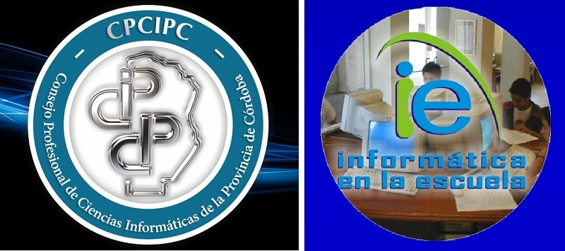

La infoescuela: proyecto de CPCIPC(consejo profesional de ciencias informaticas de la provincia de Córdoba) es la informática en la escuela lo cual el principal objetivo es incorporar la informática dentro del ámbito educativo, la informática educativa y la informática de gestión. Se brinda la posibilidad de que se acrediten acabados conocimientos y capacidad para la aplicación de la informática como por ejemplo en el procesador de texto Microsoft Word y la planilla de cálculo Microsoft Excel.
Todo evaluado mediante el desarrollo de habilidades tecnológicas, esto otorga la posibilidad de ampliar sus posibilidades de acceso a estudios en el futuro o el mundo laboral en el futuro.

Todo esto es la preparación para unos exámenes de informática que avalen sus conocimientos.